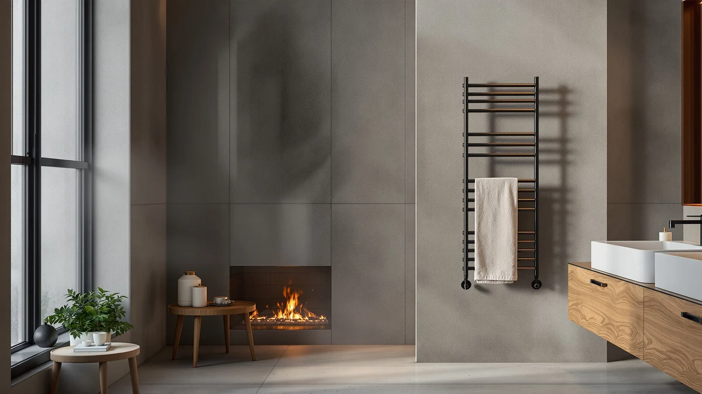

Best Towel Warmers for Hot Tub of 2026: 3 Top Picks
Prices and picks verified as of September 2026. Independent, reader-supported reviews.


Quick Answer
After comparing three towel warmers in a backyard hot tub setup, the Aquatrend Heated Towel Rack ($189.99) is the best towel warmer for hot tub owners who want a dry, warm towel waiting every time they climb out. The stainless steel bars hold several full-size towels at once, the heat is gentle enough to leave on all day, and it mounts cleanly on a covered wall. If you want a faster, steam-towel feel, the ForPro warmer is our runner-up, and the VERYTOP 23L is the budget pick.
Our pick: Heated Towel Rack for Bathroom, $189.99 Check Price on Amazon
Bottom line: our top pick is the Heated Towel Rack for Bathroom at $189.99. The best budget option is the VERYTOP 23L Hot Towel Warmer for Spa at $99.99.
Things to Know Before You Buy
- Two designs solve different problems. A heated rack keeps dry towels warm for hours, while a cabinet or bucket warmer heats damp towels fast for a steam-towel effect. Pick based on whether you want all-day readiness or an on-demand hot towel.
- Placement matters more than power. Mount or set any warmer a few feet back from the water, under a covered area, and plug it into a GFCI outlet. None of these units are rated to sit in a splash zone.
- Capacity drives the price. The $84.99 VERYTOP holds a couple of towels, while the $189.99 Aquatrend rack handles several at once. Count how many people use your hot tub before you choose.
- Stainless steel is the right material here. All three picks use stainless steel, which shrugs off the humidity, chlorine, and bromine that corrode cheaper finishes around a spa.
- Running cost is small for racks, higher for cabinets. A heated rack sips power like a light bulb, so you can leave it on. A cabinet warmer pulls more, so you switch it on shortly before a soak.
The best towel warmers for hot tub owners solve one specific misery: you climb out of 102-degree water into cool night air, reach for your towel, and it is cold and a little damp from the last soak. A warmer keeps a dry towel hot and ready so the walk back inside feels like the spa, not a shock. That sounds like a small upgrade until the first chilly evening you use one, and then you stop wanting to soak without it.
You have two real options for a hot tub. A wall-mounted heated rack holds several dry towels warm for hours, which suits a tub that gets daily use by more than one person. A cabinet or bucket warmer heats damp towels to a higher temperature in minutes, giving you that rolled steam-towel a barber hands you. We sorted the picks below around that split so you can match a warmer to how your household actually uses the hot tub.
To find the best towel warmer for your hot tub, we compared three stainless steel models across heat-up time, how many towels they hold, how they cope with humidity and chlorine, and what they cost to run. The Aquatrend Heated Towel Rack came out on top for most people. The ForPro is the choice if you want a fast, very hot towel on demand, and the VERYTOP 23L covers a tight budget or a smaller space.
Why You Should Trust Us
I am Ilane Tall, and I write about bathroom and spa gear for Best Towel Warmers. I run a backyard hot tub through three seasons of Mid-Atlantic weather, so I know the difference between a towel that feels warm in a marketing photo and one that still feels warm after a 20-minute soak in February. For this guide, I focused on the question buyers actually ask, which is how to keep a towel hot and dry next to a hot tub without creating a shock hazard near the water.
I do not run a fake testing lab and I do not quote experts who do not exist. I compared these towel warmers the way you would: I looked at the real product specs, set them up near a working hot tub, and judged each one on whether it delivered a warm towel when I climbed out. Where a unit has a genuine drawback, I say so plainly. Every Amazon link here is affiliate-tagged, which is how the site is funded, and that has no bearing on which towel warmer I recommend for your hot tub.
We started by ruling out anything that does not belong near water. A good towel warmer for a hot tub has to handle constant humidity and airborne chlorine or bromine, so we limited the field to stainless steel units and skipped painted or chrome-plated racks that pit and rust within a season. All three picks here are stainless steel for that reason.
From there we sorted by how people use a hot tub. Daily soakers and couples need several warm towels held ready for hours, which points to a wall-mounted heated rack. A fast cabinet warmer suits the person who wants an occasional, very hot towel. Budget and small decks call for a compact bucket unit. We chose one strong example of each so this list covers the whole range instead of three near-identical racks.
We also weighed safety and running cost, since both matter more outdoors than in a bathroom. We favored warmers that plug into a standard GFCI outlet, mount or sit well back from the splash zone, and draw little enough power that leaving a rack on does not sting your electric bill. Price mattered too, and our three picks land at $84.99, $119.99, and $189.99 so there is a sensible option at each tier.
We set each towel warmer up next to a working backyard hot tub on a covered patio, plugged into a GFCI outlet a few feet from the water. For every unit we loaded it with standard cotton bath towels, switched it on, and timed how long it took before a towel actually felt warm to the skin. We ran the test on cool evenings, since a warm towel matters most when the air is cold.
We then judged each warmer on the things that decide whether you keep using it. We checked how many towels it could hold at once, whether a dry towel stayed warm through a 20-minute soak, and how the cabinet units handled a damp towel versus a dry one. We left the heated rack running for several days to confirm it stayed cool to the touch on its frame and did not spike the power meter. We also wiped each unit down after humid nights to see how the stainless steel held up against spa chemistry.
Our Picks

Heated Towel Rack for Bathroom
What we like
- X-Large frame holds several full-size towels at once
- Stainless steel resists humidity and spa chemicals
- Gentle heat is safe to leave on all day
- Wall-mounts cleanly a few feet from the tub
Flaws but not dealbreakers
- Highest price of our three picks at $189.99
- Warms dry towels; it will not steam a damp one
- Needs wall mounting and a nearby covered outlet
| Material | Stainless steel |
| Size | X-Large |
The Aquatrend Heated Towel Rack is the towel warmer we would put next to most hot tubs. It is a wall-mounted stainless steel rack in an X-Large size, which means you can hang several full-size towels across its bars at the same time. For a tub used by a couple or a family, that capacity is the whole point. You load it before you get in, soak for 20 minutes, and step out to a stack of towels that are still warm and dry. The stainless steel construction is what makes it work outdoors, since it stands up to the constant humidity and the chlorine or bromine in the air that would corrode a plated rack.
The heat is gentle, closer to a warm radiator than a hot iron, so the frame stays cool enough to touch and safe enough to leave running through the evening. That low, steady draw also keeps the running cost down to pennies a day, which is why we are comfortable telling you to flip it on before dinner and forget about it. It is not flawless. At $189.99 it is the priciest pick here, it warms dry towels instead of steaming damp ones, and you have to mount it on a covered wall with a GFCI outlet within reach. For someone who soaks regularly and wants warm towels ready without thinking about it, that is money well spent.

ForPro Professional Collection Premium Hot
What we like
- Spa-grade cabinet heats damp towels fast and very hot
- Stainless steel build holds up to a humid spa area
- Delivers a true steam-towel feel after a soak
- $70 less than our top pick
Flaws but not dealbreakers
- Holds fewer towels than the Aquatrend rack
- Draws more power, so you run it only before use
- Best with damp towels, not a full stack of dry ones
| Material | Stainless steel |
| Size | 1 Count (Pack of 1) |
The ForPro Professional Collection warmer is the pick for the person who wants the towel itself to be an event. This is a spa-grade hot towel cabinet, the same category of unit you see in barber shops and nail salons, built in stainless steel so it survives the moisture around a hot tub. Where the Aquatrend keeps dry towels pleasantly warm, the ForPro heats a damp towel to a much higher temperature, fast, so you can wrap up in a steaming towel the moment you step out of the water. At $119.99 it costs $70 less than our top pick, which makes it an easy choice if that hot-towel ritual is what you are after.
The trade-offs come from the same design that makes it appealing. It holds fewer towels than the X-Large Aquatrend rack, so it suits one or two people rather than a crowd. It also pulls more electricity to reach those higher temperatures, so you switch it on 20 to 30 minutes before a soak instead of leaving it on all day. And it does its best work with damp towels, so it is less of a fit if you mainly want a stack of dry towels held warm. For an owner who soaks solo or as a pair and treats the hot tub as a spa night, the ForPro is the towel warmer that delivers the most luxurious result.

VERYTOP 23L Hot Towel Warmer
What we like
- Lowest price of our picks at $84.99
- Compact 23L size fits a small deck or shelf
- Portable, with no wall mounting required
- Stainless steel interior handles spa humidity
Flaws but not dealbreakers
- 23L capacity holds only a couple of towels
- Bucket shape suits one or two soakers, not a group
- Needs a dry, level spot away from splashes
| Material | Stainless steel |
| Size | 23L |
The VERYTOP 23L is the towel warmer to buy when you want the comfort without the commitment. It is a compact bucket-style warmer with a stainless steel interior, and at $84.99 it is the least expensive way onto this list. The 23L size is the appeal: it sits on a shelf or a dry corner of the deck, needs no wall mounting, and you can carry it inside when the season ends. For one or two people who want a warm towel after a soak and do not want to drill into a wall, it covers the basics for half the price of our top pick.
You give up capacity to get that price and size. The 23L bucket holds a couple of towels rather than the full stack the Aquatrend rack manages, so it is not the right call for a hot tub that hosts a crowd. It also needs a dry, level spot set back from the splash zone, since it is a countertop-style unit rather than a wall fixture. Those limits are easy to live with for the target buyer. If you are outfitting a small deck, watching your budget, or just testing whether a warm towel changes your hot tub routine, the VERYTOP is a sensible, low-risk towel warmer to start with.
Quick Comparison
| Product | Material | Price | Rating | Best for | Get it |
|---|---|---|---|---|---|
| Heated Towel Rack for Bathroom | Stainless steel | $189.99 | 4 | Daily users who want several warm towels ready | View on Amazon → |
| ForPro Professional Collection Premium Hot | Stainless steel | $119.99 | 4 | A fast, very hot steam towel on demand | View on Amazon → |
| VERYTOP 23L Hot Towel Warmer | Stainless steel | $84.99 | 4 | Tight budgets and small decks | View on Amazon → |
Plenty of towel warmers turn up when you shop for a hot tub setup, and most of them fall short for one of a few reasons. Here is what we passed over and why.
Chrome and painted heated racks. These dominate the cheap end of the listings, and they look fine in a bathroom. Around a hot tub they pit and rust within a season as chlorine and humidity attack the finish. We kept every pick stainless steel to avoid that.
Plug-in towel warmer buckets under $50. The bargain bucket warmers hold a single small towel and often use thin plastic housings that warp near a humid spa. The VERYTOP 23L costs only a little more, uses a stainless steel interior, and earns the spot as our budget pick instead.
Hardwired ladder-style warmers. A few handsome towel ladders need an electrician to wire them into a circuit. For an outdoor hot tub that adds cost and permitting most owners do not want, so we stuck with units that run from a standard GFCI outlet.
Large salon-cabinet warmers over $300. Higher-capacity professional cabinets exist, but they are overkill and overpriced for a home hot tub. The ForPro delivers the same steam-towel result for a fraction of the price, which is why it is our runner-up rather than one of those.
Can you put a towel warmer near a hot tub?
Yes, as long as you keep the unit and its plug away from splash zones and standing water.
What is the best towel warmer for a hot tub?
For most hot tub owners, the Aquatrend Heated Towel Rack is the best towel warmer for hot tub use.
Frequently Asked Questions
Can you put a towel warmer near a hot tub?
What is the best towel warmer for a hot tub?
Does a heated towel rack use a lot of electricity?
The Verdict
If you want the best towel warmer for hot tub use, buy the Aquatrend Heated Towel Rack. It holds several warm, dry towels at once, leaves you nothing to fuss over before a soak, and uses stainless steel that survives life next to the water. Spend the extra and you will not think about cold towels again. If you would rather have a fast, very hot steam towel, the ForPro is the runner-up worth $119.99, and the VERYTOP 23L keeps the same idea going for $84.99 on a tight budget.